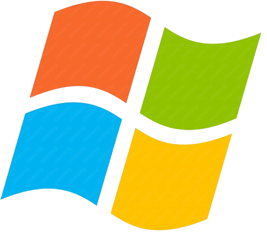
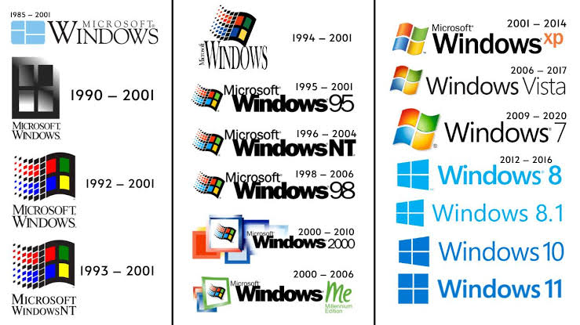
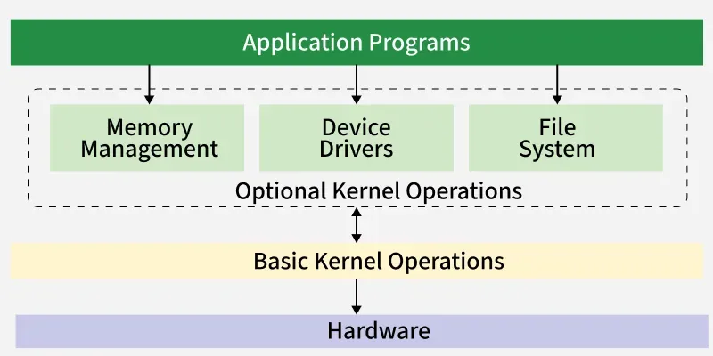
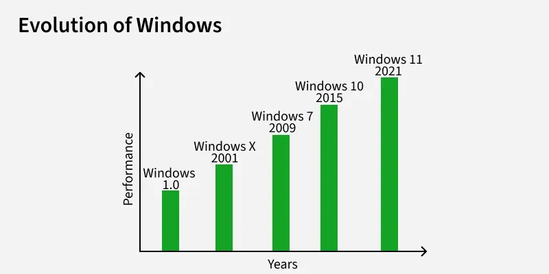

WHAT IS
Windows?

Overview & History
Windows is an operating system created by Microsoft in 1985, undergoing many changes and
new innovations over the years from Windows 1.0 in 1985 all the way to Windows 11 in 2021.
Key Characteristics of Windows:
Graphical User Interface (GUI): Allowing users to manipulate graphical objects with a pointing device like a mouse
File Management: Allowing users to organize and store data files on the cloud or device
Control Panel: Allowing users to control their system settings and manage various system configurations
Security Features: Already built into Windows, ranging from antivirus to encryption
Virtual Desktops: Which can be considered an extension of creating and managing many desktop environments on one screen



Architecture
The Windows architecture is layered to ensure effective management of hardware resources.
Layers of Windows Architecture:
Hardware: The physical elements of the computer (processor, memory, and other storage devices) controlled by the operating system
Kernel: The kernel controls system resources, processes, and hardware/software interface
File System & Memory Management: Layers responsible for ensuring that the data is stored safely and allocation of physical/virtual memory
Device Drivers: Software that acts as an interface between the operating system and hardware components
Applications: User-oriented software (browsers, media players, productivity applications) working within the Windows environment
Processing Modes:
User Mode: An environment in which normal application programs execute without crashing the operating system
Kernel Mode: An environment of full privilege for OS components and device drivers reserved for direct hardware control